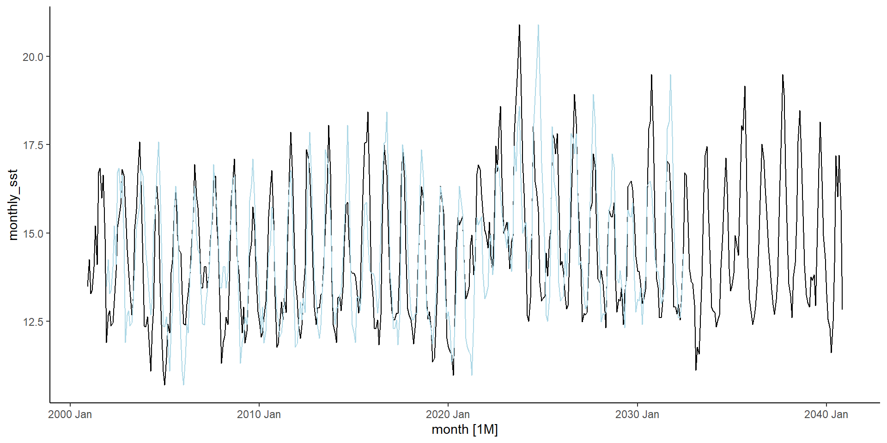

Forecasting: Chapter 5 Notes
Overview: The forecaster’s toolbox
What did we learn from Chapter 5❓
A basic forecasting workflow (5.1)
Simple modeling techniques (5.2)
Methods for evaluating residuals from fitted values (5.3-5.4)
Some prediction interval techniques (5.5)
Methods for evaluating forecast accuracy (5.6-5.10)
We’ll review the content by section (starting with 5.1) and discuss relevant exercises as we go.
Big shoutout to Jannine for leading Week 2 and inspiring this layout <3
Data for exercises
For all exercises in these notes, I’ll use a time series of fitted and forecasted sea surface temperatures for Monterey Bay National Marine Sanctuary.
# Access data - I'm happy to share on request
mb = readRDS("Data/Monterey Bay Data for Chapter 5 Exercises") %>% # Again assumes GitHub repo working directory
select(date_flag, mean_value) %>%
tsibble(index = date_flag) %>%
index_by(month = ~ yearmonth(.)) %>%
summarize(monthly_sst = mean(mean_value))
# Reset themes
theme <- theme_set(theme_classic())
# Plot
autoplot(mb, monthly_sst) +
annotate("rect", fill = "lightblue", alpha = 0.5,
xmin = yearmonth(371), xmax = yearmonth(731),
ymin = -Inf, ymax = Inf)Takeaways about the practice data I’m using:
I’m modeling a model, hehe. I think this is very bad practice :)
There is a very long-term trend in the data which won’t be reflected as strongly in the subset of data I’ll use, but I wanted to be able to visually parse the monthly cycles and it’s hard to do that when looking at 120 years.
5.1: A tidy forecasting workflow

5.2: Some simple forecasting methods
Simple forecasting methods:
Average method forecasts all future values as the historical mean value.
Naive method forecasts all future values as the most recent value.
Seasonal naive method forecasts all future values as the mean historical value for the given season.
Drift method calculates a linear “drift” function with a slope equal to the difference between the first observation and the most recent observation. The line defined by the drift function is the forecast.
Relevant example:
Getting a little ahead of ourselves here but I think it’s good to visualize these basic models and hard to do so without actual forecasting!
# Try different models on Monterey Bay data
mb_simple_models = mb %>%
# Leave out 100 points for testing data (the sliced data includes 479 observations)
slice(1:379) %>%
# Build seasonal naive, naive, and drift models
model(Seasonal_Naive = SNAIVE(monthly_sst),
Naive = NAIVE(monthly_sst),
Drift = RW(monthly_sst ~ drift()))
# Forecast
mb_simple_forecasts = mb_simple_models %>%
forecast(h = 100)
# Plot
autoplot(mb, monthly_sst) +
autolayer(mb_simple_forecasts, level = NULL)5.3: Fitted values and residuals
5.3 Definitions:
I think of fitted values as forecasts for time stamps for which we already have observations. Is this an accurate definition❓
Residuals are the differences between observed and fitted values for the same time stamp.
5.3 Relevant example:
# Create a table of residuals (excluding innovation residuals since we don't get to those until the next section)
mb_snaive_resids = mb_simple_models[1] %>%
augment() %>% select(-.innov)
# Print out residuals (excluding the first few which are NAs)
mb_snaive_resids[13:379,]# A tsibble: 367 x 5 [1M]
# Key: .model [1]
.model month monthly_sst .fitted .resid
<chr> <mth> <dbl> <dbl> <dbl>
1 Seasonal_Naive 2001 Dec 11.9 13.5 -1.58
2 Seasonal_Naive 2002 Jan 12.7 14.3 -1.57
3 Seasonal_Naive 2002 Feb 12.8 13.3 -0.487
4 Seasonal_Naive 2002 Mar 12.4 13.4 -1.01
5 Seasonal_Naive 2002 Apr 12.5 14.0 -1.58
6 Seasonal_Naive 2002 May 13.1 15.2 -2.12
7 Seasonal_Naive 2002 Jun 13.9 14.1 -0.179
8 Seasonal_Naive 2002 Jul 15.2 16.7 -1.56
9 Seasonal_Naive 2002 Aug 15.4 16.8 -1.41
10 Seasonal_Naive 2002 Sep 15.8 16.0 -0.179
# ℹ 357 more rows5.4: Residual diagnostics
5.4 Definitions:
- Innovation residuals are residuals of transformed forecasts
Evaluating residuals:
First and foremost, residuals should be uncorrelated with a zero mean. It’s best for them also to have constant variance and a normal distribution. Why are these things important❓
We learned about two “Portmanteau” tests to measure autocorrelation of residuals:
Box-pierce tests (Q)
Ljung-box tests (Q*)
For both tests, we’ll need to set values of l and k
l should be 10 for nonseasonal data or 2m for seasonal data (where m is the period of seasonality)
k is the number of parameters in the model
5.4 Relevant example:
# Run a Box-Pierce test on the Monterey Bay seasonal naive model
mb_snaive_fitted = mb_simple_models[1] %>%
fitted() # Get the fitted values
# Plot the data and fitted values so we can get a visual sense for the narrative here
autoplot(mb) + autolayer(mb_snaive_fitted, level = NULL, color = "lightblue")
# Plot residuals
gg_tsresiduals(mb_simple_models[1]) +
ggtitle("Residual diagnostics for the seasonal
naive fitted values on the Monterey Bay data")
# Collect Box Pierce test value
mb_simple_models[1] %>% augment() %>%
features(.innov, box_pierce, l=8) # I set l equal to six because the seasonal cycle is 4# A tibble: 1 × 3
.model bp_stat bp_pvalue
<chr> <dbl> <dbl>
1 Seasonal_Naive 194. 0What can we learn from this Box-Pierce test? Did I call it correctly (I mean actually this is a question I have)❓
5.5: Distributional forecasts and prediction intervals
5.5 Definitions:
Prediction interval is an interval around in which we expect to observe actual values. The size of the prediction interval is determined by what percent of possible outcomes you’d like to cover
One-step prediction intervals are estimated using the standard deviation from residuals
Bootstrapped prediction intervals are appropriate when we can’t assume that the residuals are normally distributed. Calculated step-by-step by defining the forecast error
Can anyone articulate the difference between one-step and bootstrapped prediction intervals better than me❓
5.5 Relevant example:

5.6: Forecasting using transformations
5.6 Definitions:
Back-transforming is the process of reverting forecasts to the original scale of the data (if the data was transformed before forecasting).
Bias adjustment is required when back-transforming forecasts because back-transforming yields the median rather than the mean (this is called the forecast bias). Why does this happen❓
5.7: Forecasting with decomposition
5.7 Concept:
Forecasting with additive decomposition can be done simply by forecasting each component separately and then adding them together to generate the recomposed forecast.
5.7 Relevant example:
# The textbook authors recommend this nested series of functions
mb_decomp_forecast = mb[1:379,] %>%
# "model()" defines a model
# "stlf =" stands for stl forecasting
# "decomposition_model()" defines a type of decomposed model
model(stlf = decomposition_model(
# "STL()" is the method of decomposition we learned during last session which separates a long-term trend and a seasonal trend from the data
STL(monthly_sst ~ trend(), robust = TRUE),
# "STL()" and "NAIVE()" here model two parts of the deomposition
NAIVE(season_adjust))) %>%
# I think the "stlf =" is forecasting the two parts of the model together automatically for us
forecast(h = 100)
# For comparison, let's make a basic seasonal naive model
mb_snaive_forecast = mb_simple_models[1] %>%
forecast(h = 100)
# Plot the decomposed and recomposed model in red and the seasonal naive model in blue
autoplot(mb, monthly_sst) +
autolayer(mb_snaive_forecast, level = NULL, color = "blue") +
autolayer(mb_decomp_forecast, level = NULL, color = "red")What’s going on here❓
Note on code: To perform an STL decomposition on a time series, we can use either feasts::STL() or stats::stl(). feasts::STL() is recommended by the textbook since it’s part of the package system the textbook authors built but, in my opinion, it’s pretty inflexible and opaque. That said, I’ll use feasts::STL() for the example below since it works with the decomposition_model() parameter the authors ask us to call in the exercises.
5.8: Evaluating point forecast accuracy
5.8 Definitions:
Training and testing sets are slices of the data used separately to build a model and test its performance.
Forecast errors are essentially residuals calculated over the interval of the testing data. They’re not technically residuals because they don’t describe how the model differs from data on which it was trained; rather, they describe how the model performs in novel situations.
Forecast errors are often scale-dependent, which means they’re calculated on the scale of the data and can’t be compared across datasets.
Some tests of forecast error include:
Mean absolute error (MAE)
Root mean squared error (RMSE)
Percent error is unit-free, so it’s useful for comparing forecast errors between datasets
Scaled errors are an alternative to percent error scaled from the mean absolute error fo the training data. Scaled errors are less than one if the forecast is better than a one-step naive method (we hope it is)!
What are some of the pro’s and con’s of these tests❓
5.8 Relevant Example
# Compare accuracy scores for forecast errors from the two forecasts generated in the last code chunk
accuracy(mb_decomp_forecast, mb)# A tibble: 1 × 10
.model .type ME RMSE MAE MPE MAPE MASE RMSSE ACF1
<chr> <chr> <dbl> <dbl> <dbl> <dbl> <dbl> <dbl> <dbl> <dbl>
1 stlf Test -0.271 1.04 0.855 -2.42 5.96 0.838 0.780 0.663# A tibble: 1 × 10
.model .type ME RMSE MAE MPE MAPE MASE RMSSE ACF1
<chr> <chr> <dbl> <dbl> <dbl> <dbl> <dbl> <dbl> <dbl> <dbl>
1 Seasonal_Naive Test 0.190 0.991 0.768 0.916 5.17 0.752 0.745 0.632Which model performs better here❓
5.9: Evaluating distributional forecast accuracy
5.9 Definitions:
Quantiles are values under which some percent of observations should fall and over which the rest of the observations should fall.
Pinball loss function gives the likelihood that a value would be observed (I think). This can be interpreted like absolute error… let’s chat about this more in the example.
Winkler score describes the accuracy of the prediction interval as the length of the prediction interval plus a penalty if an observation falls outside it.
Continuous ranked probability score (CRPS) evaluates forecast distributions with an average of the quantile scores (lower is better)
Scale-free comparisons compares models. The output is a proportion of how many predictions one model predicted that another didn’t. If you don’t have two models to compare, skill_score() will automatically compare your model to the naive or seasonal naive model.
# Plot with a prediction interval
autoplot(mb, monthly_sst) +
autolayer(mb_drift_forecast, level = 80, alpha = 0.25)# Let's look at some distributional accuracy scores
mb_simple_forecasts %>%
accuracy(mb, list(qs = quantile_score,
winkler = winkler_score,
crps = CRPS,
skill = skill_score(CRPS)),
probs = 0.2, level = 80)# A tibble: 3 × 6
.model .type qs winkler crps skill
<chr> <chr> <dbl> <dbl> <dbl> <dbl>
1 Drift Test 2.72 20.9 2.12 -1.66
2 Naive Test 2.59 19.4 2.00 -1.50
3 Seasonal_Naive Test 1.05 7.14 0.797 0 Alright guys what the heck is going on here❓❓❓
5.10: Time series cross-validation
5.10 Definition:
- Rolling forecasts draw from different data sources for training and testing datasets. I found the figure in the textbook helpful to understand this method

5.11: Exercises
I have a few exercises I’d like to talk about here but we can also explore others.
Exercise 3
## Exercise 3
# Access Australian beer data
recent_prod = aus_production %>% filter(year(Quarter) >= 1992)
# Fit a model
fit = recent_prod %>% model(SNAIVE(Beer))
# Forecast
fit %>% forecast() %>% autoplot(recent_prod) +
ggtitle("Seasonal naive forecast of Australian beer production")fit %>% gg_tsresiduals() + # Check if the residuals look like white noise
ggtitle("Residuals for seasonal naive forecast of Australian beer production")Do these residuals look like white noise to us❓
Exercise 6❓
a. Good forecast methods should have normally distributed residuals.
b. A model with small residuals will give good forecasts.
c. The best measure of forecast accuracy is MAPE.
d. If your model doesn’t forecast well, you should make it more complicated.
e. Always choose the model with the best forecast accuracy as measured on the test set.